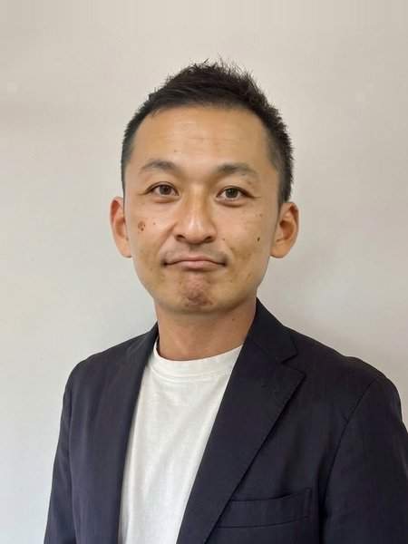

合同会社UP LINK 代表
社長を現場から解放する仕掛け人
成相 裕康
（なりあい ひろやす）
経営者の時間を、1日2時間つくる仕事をしています。
ご挨拶
売上はあるのに、時間がない。そんな社長・院長の時間を、1日2時間つくります。業種は問いません。車の整備・板金工場、リフォーム・外構、クリニック・治療院・サロン、士業の一人事務所など、社長ご自身が現場に出ている会社ほど効きます。
こういう方のお手伝いをしています
【お客さんとして】
本命はこれ1つです：社長が忙しすぎて現場から抜けられない会社
※規模は問いません。一人でも30人でも、社長が現場から抜けられないなら当てはまります。Zoomで全国対応します
いちばん力を出せるのは
- 自由診療のクリニック・美容サロン・整体院の院長（一人院長ほど効きます）
続いて：士業の一人事務所、車の整備・板金工場、リフォーム・外構。社長ご自身が現場に出ている業種ほど効きます
こんな状態なら、お役に立てます
- 見積や請求書を、社長自身が夜や休日に打っている
- 「自分がやったほうが早い」と言って、結局ぜんぶ自分でやっている
- 休みの日もスマホで連絡を返している／飲み会に誘っても来ない・アポはいつもリスケ
- SNSやLINEを「やらなきゃ」と思ったまま、何ヶ月も止まっている
- 新しく店や拠点を立ち上げて、SNSやホームページを一からつくらないといけない
- 売上は立っているのに「もう時間が足りない」／「もう少し時間があれば、もっと伸ばせるのに」
こんな先生も
- AI（ChatGPTなど）が便利なのは分かっているのに、検索にしか使えておらず「自分には仕組みにできない」と思っている、忙しい自営業・士業の先生
【一緒に組む方として】
- サロン・治療院のコンサルタント、開業コンサル、フランチャイズのコンサル、集客コンサルの会社（仕組みづくりの部分を一緒に担えます）
- 整体院・サロンを複数持つオーナー
- デザインを専門にするWeb制作の方（できたサイトの運用・仕組みの部分をこちらで担えます）
- 店舗を持つ経営者が集まるコミュニティや勉強会を運営している方
まずは無料で1回
60分、お話しさせてください（無料・Zoom）。1週間の使い方を伺って、どこの時間が削減できるかを一緒に見ます。売り込みはしません。『うちはまだ早い』も立派な答えです。
無料の棚卸しセッションを予約する（60分）
G.A.I.N.S.
Goals / Accomplishments / Interests / Networks / Skills
ひとことで
- 「時間が足りない」「効率化したい」「もっと自由な時間がほしい」──そんな社長の声を聞いたら、成相を思い出してください
GOALS｜目標
- 【この仕事にたどり着いたわけ】整体院の院長として、自分が現場に立たないと回らない店を長くやってきました
- 「自分がやったほうが早い」を手放し、仕事を仕組みとスタッフに渡したら、売上を保ったまま現場から抜けられました
- その手順を、いまはほかの社長に渡しています
- 【なぜこの仕事か】時間は有限です。効率化そのものより、空いた時間で「その人が何をしたいか」を叶える仕事がしたい
- 47歳になり、自分にもそんなに時間はないと思うようになりました。同じ経営者の力になりたい。
- 【1年で】時短支援の事業を、店舗事業（整体院）と同じ規模の売上まで育てる。店舗をやめても成り立つ状態にする
- 【これから先】55歳までに暖かいところに拠点を持ち、夏と夏を行き来する暮らしをする（沖縄・海外）
- 自分の整体院を、自分が現場にいなくても回る状態のまま続ける。自分がやっていないことは人に売らない、が信条です
仕事の中身（3ステップ）｜「社長を現場から解放する」とは具体的に何をするか
- ① 棚卸し：社長の1週間を一緒に書き出し、時間がどこに消えているかを見える形にします（ここまでが無料の60分ヒアリング。内容を持ち帰り、手放し方の提案をお出しします）
- ② 仕分け：「やめていい仕事」「人に渡せる仕事」「社長にしかできない仕事」に分けます。コーチとして、手放せない理由（気持ちの引っかかり）も一緒にほどきます
- ③ 仕組みに渡す：渡せる仕事を、AI・外注・スタッフのうち合うものに渡し、社長が確認するだけの形にします。手段はAIに限りません
- 【自分の会社で実際に動いている例】請求書：「〇〇さんに◯月分を」と話しかけるだけで、請求書とメールの下書きまでできあがり、自分は確認して送るだけ
- SNS：3アカウントの企画〜投稿を、これまで書いたものを覚えさせたAIが回す（自分はチェックだけ）
- LINE：お客様とのやり取りをAIが一次対応
- 記録：打ち合わせの文字起こしから、要点・次にやること・誰に何を繋ぐかまでAIがまとめる（面談の記録も）
- → パソコンが苦手なままで、事務作業を月40時間減らし、月に10日休めるようになりました（夏は10連休も）
ACCOMPLISHMENTS｜実績
- 【経歴】東京生まれ。柔道整復師の専門学校（学費は自分で稼ぎながら）→ 花王販売で営業を約2年 → 整骨院を開業 → 自費の美容整体院として14年目の今も現役の院長
- 【自分の会社で。すべて自分で試してから、人に渡しています】単価35,000円・週休3日で、月商300万円を10年間一度も切っていない
- 「パソコンが苦手といえば僕」と言われたアナログ人間が、AIのおかげで事務作業を月40時間減らし、月10日の休みと夏の10連休を実現（売上は保てました）
- 時間に追われる状態から自分自身が抜けた。心とお金と時間にゆとりができた（これが今の仕事の原点）
- 【クライアントで（治療院です。手順は業種を問いません）】「もう限界」の経営者が3ヶ月で月商250万円→320万円
- 【資格】Soleado プロコーチ資格。コーチング・カウンセリング・心の学びも積んできたので、仕組みを入れても動かない原因を対話で外せます
INTERESTS｜興味・関心
- 波乗り（波があれば毎朝、海に入ってから仕事へ）
- 富士登山（一緒に登れる方、募集中）
- 暇があればAIと喋っています
NETWORKS｜人脈
- 店舗経営に関することなら、14年かけて選び抜いてきた外注先をご紹介できます。信頼できる専門家のリストがあります（Web制作／SNS運用・動画・ロゴ／LINE公式アカウント設計／会計士・行政書士などお金まわり／リフォーム・建設／車の買取・修理 ほか）。分野を言っていただければお繋ぎします
- 整体院・治療院・サロンの院長（主宰するオンラインサロンUPLINKに残った講師5名＝全員現役の院長／コンサル先／同業）。治療院向けに商売をされている方には、こちらからお繋ぎできます
- 湘南に24〜25年。サーフィン仲間が多数
- 前職（花王販売株式会社）時代のつながり
SKILLS｜スキル
- 業務の仕分け（社長がやらなくていい仕事を見つけて、AI・外注・スタッフに渡す。手段はAIに限りません）
- AI導入（SNS投稿・顧客対応・書類づくり・記録の自動化。設定はすべてこちらで行います。動いている画面をそのままお見せできます）
- コーチング（Soleado プロコーチ資格。仕組みを入れても動かない原因を対話で外す）
- SNS集客（ThreadsとInstagram。自分の院はほぼこの2つで集客が成り立っています）
- 整体の施術と院経営（14年）／LP制作・Googleビジネスプロフィール運用
略歴
ビジネス・個人・その他
ビジネス
- 事業名
- 合同会社UPLINK（経営者の時間づくり）／ラポール美容整体院（院長14年）
- 専門分野
- 社長を現場から解放する仕掛け人（経営者の時間を1日2時間つくる）。自由診療の院長・サロン・士業・一人社長など、社長自身が現場に出ている会社が得意です
- 所在地
- 神奈川県
- 経験年数
- 経営14年（自費の美容整体院を運営。いまはその経験を、経営者の時間づくりに使っています）
- 過去の職業
- 柔道整復師の専門学校（学費は自分で稼ぎながら通いました）／花王販売株式会社の営業・約2年／整骨院を開業
個人
- 趣味
- 波乗り（職場と海のあいだに家があるので、波があれば毎朝、海に入ってから仕事へ）／富士登山（年1〜2回。一緒に登れる方、募集中）／車中泊旅行／海外旅行（年末年始は海外で過ごすと決めて独立しました）／暇があればAIと喋っています（座っているのが苦手なので、うろうろしながら）
- 関心事
- 効率化そのものより、空いた時間で「その人が何をしたいか」を叶えること。人との時間を大切にすること。気になるニュースは地球温暖化
- 出身地
- 東京生まれ、埼玉・浦和育ち（与野と北浦和のあいだ）。サッカー少年でした
その他
- 強い願望
- じっとしていられないタイプで、パソコン好きと言いながら座っているのが苦痛。うろうろしながらAIと喋っています。沖縄や海外に拠点を持ち、好きな時に好きな場所で仕事をして、好きなことだけをする生活。寒いのが苦手なので、55歳までに夏と夏を行き来する暮らしをつくります。
- 誰も知らない私
- あんまり仕事をしたくありません（口癖のように言ってしまうので、知っている人は知っています）。お店のことはもちろんしっかりやりますが、できれば何もせず、海で波乗りをして、帰ってビールを飲む。その生活が当たり前に続いたら最高だと思っています。
- 成功の鍵
- 「自分がやったほうが早い」を手放したこと。パソコンが苦手なままでも、仕組みに渡せば回ると分かったこと。